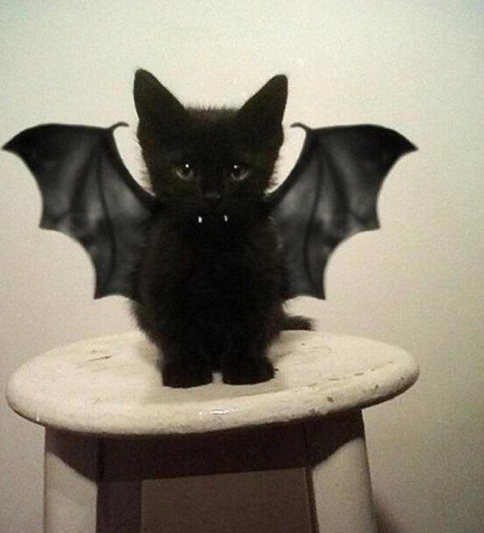

Sobre mim
Meu nome é Vinícius Lira e sou ingressante do BCC. Gosto de One Piece, café e gatos.
O que eu aprendi no Webdev
Aula 1
- O que é HTML, por que ele não é uma linguagem de programação e a estrutura básica de seu código.
- O que é uma tag, como usá-la e alguns exemplos.
- O que é github, como criar e editar um repositório (através de alguns comandos).
Aula 2
- O que é CSS e a estrutura básica de seu código.
- O que são seletores, atributos e valores.
- A especificidade entre tag, class e id.
- O que é box model e as principais unidades de medida usadas.
Aula 3
- O que é layout.
- Quais são os principais tipos de layout (Flow Layout, Flexible Box Layout e Grid Layout).
- Como usar o Flow Layout e o Flexible Box Layout.
Aula 4
- O que é responsividade.
- A diferença entre Layout flexível e Layout adaptativo.
- O que são Media Query e como utilizá-la.
Fotos de gatos
Gato vampiro
Gato Luffy (One Piece)